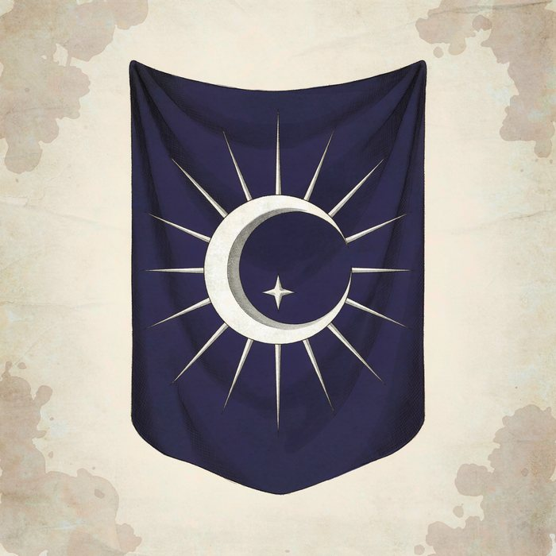
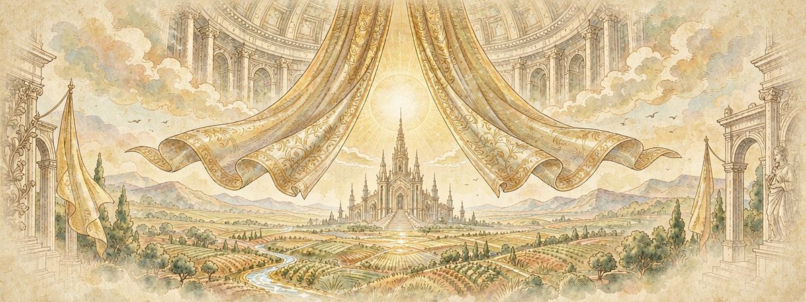
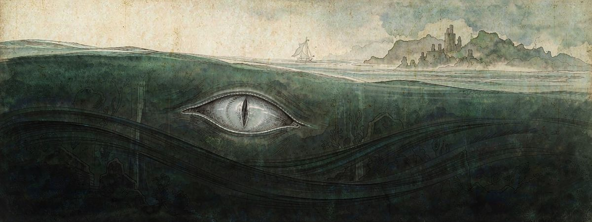
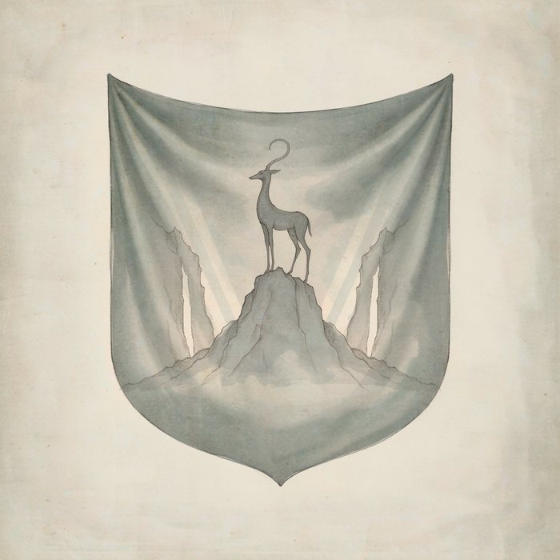

一、玩家角色（PC）
玩家扮演一名 异界者（穿越者），与散落于世的规则缔结契约，成为 执契者，自 7 阶向 0 阶晋升。详细创建流程见 《角色创建指南》。
二、各国人物
四国各有其政体与掌权者，以下按国家分列其重要人物。

珂莱迪亚
极夜之国 · 一年仅十天白昼
权力中枢
- 艾尔琳议长 · 出身最古老的守夜人世家
武装
- 守夜人军团极夜中的秩序支柱
✦

奥兰巴托
王权与教权合一 · 领土最大
教廷
- 奥兰巴托·奥尔古斯教皇 · 圣座大统领
王权
- 年迈的老国王国王 · 与教廷共治
骑士团
- 德克里恩国王的骑士长
✦

格鲁恩
东方群岛 · 隐秘国教之国
教廷
- 奥古斯都教皇 · 渔民出身，白手起家而登顶
✦

阿拉纳
西方山岭 · 城邦联合
城邦议会
- 玛拉首席代表 · 猎魔人，最懂得山岭呼吸的人